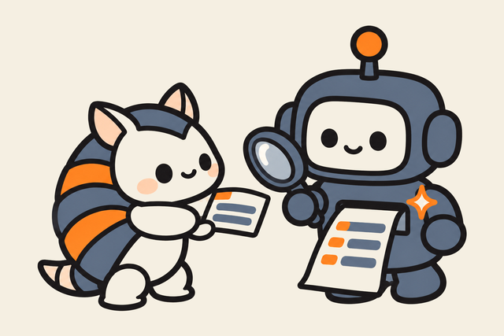

Laboratório de IA Aplicada · UNIPAMPA · 2026
Do PDF do scanner a dados estruturados, com o modelo dentro da organização.
O MulitaMiner lê relatórios PDF de scanners de vulnerabilidade e devolve um registro por achado, num esquema único. O modelo de linguagem que faz a extração roda localmente, ajustado com dados do próprio scanner.
O problema
O relatório entra como texto, não como dado.
Um formato por ferramenta
Summary no OpenVAS, Synopsis no Nessus. Mesma informação, nomes e layouts diferentes.
Triagem é leitura manual
Consolidar, comparar e priorizar exige transcrever achados à mão, relatório por relatório.
A nuvem não é saída fácil
O relatório é o mapa da superfície de ataque: hosts, portas e falhas. Mandar isso para fora é um risco (LGPD, art. 46).
Objetivo
Um PDF entra. Um esquema único sai.
Dez campos comuns a todos os scanners, preenchidos pelo modelo a partir do texto do relatório.
{
"name": "rsh Service Detection",
"severity": "LOG",
"cvss": 0.0,
"host": "172.30.1.1",
"port": 514,
"protocol": "tcp",
"source": "openvas"
}{
"name": "rsh Service Detection",
"severity": "HIGH",
"cvss": 7.5,
"host": "172.30.1.1",
"port": 514,
"protocol": "tcp",
"source": "nessus"
}Formatos diferentes na entrada, os mesmos campos na saída. Exemplo real dos dois scanners sobre o mesmo serviço.
Como funciona
Pipeline fixo, modelo trocável.
Cinco etapas. A contagem de achados é fixada antes de qualquer chamada ao modelo, e só uma etapa usa IA.
- 01
Ler
O texto sai do PDF sem OCR (pypdfium2). Cabeçalhos de página e quebras são removidos antes do modelo.
- 02
Segmentar
Uma expressão regular por scanner acha a linha que abre cada achado. Um bloco por achado, com id fixo: 34 blocos no PDF, 34 linhas na planilha do scanner.

03Extrair
Blocos inteiros vão ao modelo em lotes, com um esquema JSON. O bloco 21 volta como bloco 21, ou a resposta é recusada e refeita em lotes menores.
- 04
Consolidar
Severidade e CVSS normalizados, duplicatas fundidas. Host, porta e protocolo vêm por regra, não do modelo.
- 05
Exportar
Um registro por achado, em JSON, XLSX, CSV, SARIF, CSAF ou DefectDojo. Trocar de modelo é trocar um argumento.
Método
O gabarito vem da própria ferramenta.
O scanner exporta o PDF e a planilha do mesmo scan. Pareando os dois por host e id do achado, cada vulnerabilidade vira um par pergunta e resposta, sem anotação manual.
Dados de treino
80% é OpenVAS: por isso a avaliação é reportada por scanner, não só agregada.
Três modelos, a mesma prova
- LocalQwen2.5 1,5B, sem treino. Roda numa placa de vídeo da organização; só recebe exemplos no pedido.
- AjustadoO mesmo Qwen2.5 1,5B, ajustado com QLoRA em 4 bits sobre os 6.841 exemplos. O sistema proposto.
- NuvemDeepSeek V4.1 Flash via API, few-shot. O teto de qualidade, ao custo de o relatório sair da organização.
Prova: 8 relatórios inéditos, fora do treino, com 1.028 vulnerabilidades. OpenVAS 318 (3 relatórios), Nessus 268 (1), Qualys 419 (1), ZAP 23 (3).
Resultados
Quase igual à nuvem, em um terço do tempo, sem o relatório sair.
Média de 5 rodadas sobre os 8 relatórios de teste. O ajuste fino recupera quase toda a diferença entre o modelo local e o de nuvem.
| Local | Ajustado | Nuvem | |
|---|---|---|---|
| Vulnerabilidades encontradas | 92%942 | 97%998 | 99%1.019 |
| Vulnerabilidades inventadas | 34 | 4 | 0 |
| Campos em branco | 3.818 | 1.322 | 40 |
| Tempo para os 8 relatórios | 39 min | 33 min | 98 min |
| Custo de API | US$ 0 | US$ 0 | US$ 0,96 |
| Dentro da organização | sim | sim | não |
Vulnerabilidades encontradas, por scanner
Achados do relatório que viraram registro. Em percentual.
Descrição: quanto o texto bate
Similaridade palavra por palavra com a descrição do scanner, de 0 a 1.
Campos curtos: acerto exato
Igual ao gabarito ou errado. Um traço: o scanner não tem esse campo.
| Campo | Scanner | Local | Ajustado | Nuvem |
|---|---|---|---|---|
| Severidade | OpenVAS | 100% | 100% | 100% |
| Nessus | 96% | 99% | 100% | |
| Qualys | 57% | 95% | 100% | |
| ZAP | 100% | 100% | 100% | |
| Porta | OpenVAS | 100% | 100% | 99% |
| Nessus | 0% | 68% | 100% | |
| Qualys | 0% | 67% | 100% | |
| ZAP | — | — | — | |
| Id do teste | OpenVAS | — | — | — |
| Nessus | 99% | 93% | 100% | |
| Qualys | 87% | 79% | 100% | |
| ZAP | 77% | 96% | 100% |
Erros por tipo
Ocorrências nos 8 relatórios. O modelo ajustado troca campos em branco por um erro novo: o número do bloco.
| Tipo | Local | Ajustado | Nuvem |
|---|---|---|---|
| Campo em branco | 3.818 | 1.322 | 40 |
| Texto cortado | 261 | 15 | 25 |
| Severidade errada | 167 | 24 | 0 |
| Número de bloco errado | 56 | 166 | 0 |
| Vulnerabilidade perdida | 86 | 30 | 9 |
| Texto com sobra | 54 | 14 | 598 |
Onde o ajustado erra. No OpenVAS, o scanner com mais exemplos no treino, a descrição fica em branco em metade dos achados (local 90%, nuvem 100% preenchidas).
Conta em vez de ler. Em 166 lotes o modelo respondeu "bloco 1, bloco 2" para os blocos 6 e 7. O número fora do lote é descartado e o lote refeito, por isso não vira registro errado.
Atividades
O projeto, tarefa por tarefa.
As apresentações entregues na disciplina, em ordem. Cada uma abre em PDF.
Proposta
Problema, objetivo, arquitetura, decisões de IA, dados e plano experimental em oito etapas.
06Contextualização
O que é um scanner de vulnerabilidades e por que os relatórios dele viraram um problema.
07Funcionamento
Como um PDF vira dados, etapa por etapa, seguindo um achado real, e como vamos medir.
08Resultados com um modelo de nuvem
DeepSeek V4.1 Flash nos 8 relatórios de teste: a referência de qualidade.
09Resultados com um modelo local
Qwen2.5 1,5B sem treino: o mesmo teste, sem o relatório sair da organização.
10Resultados com o modelo ajustado
O modelo local treinado com o gabarito, e os três lado a lado.
Equipe
Quem fez.
Disciplina Laboratório de IA Aplicada, Universidade Federal do Pampa, 2026. O MulitaMiner também é um projeto de pesquisa do grupo; o código e o modelo estão públicos.